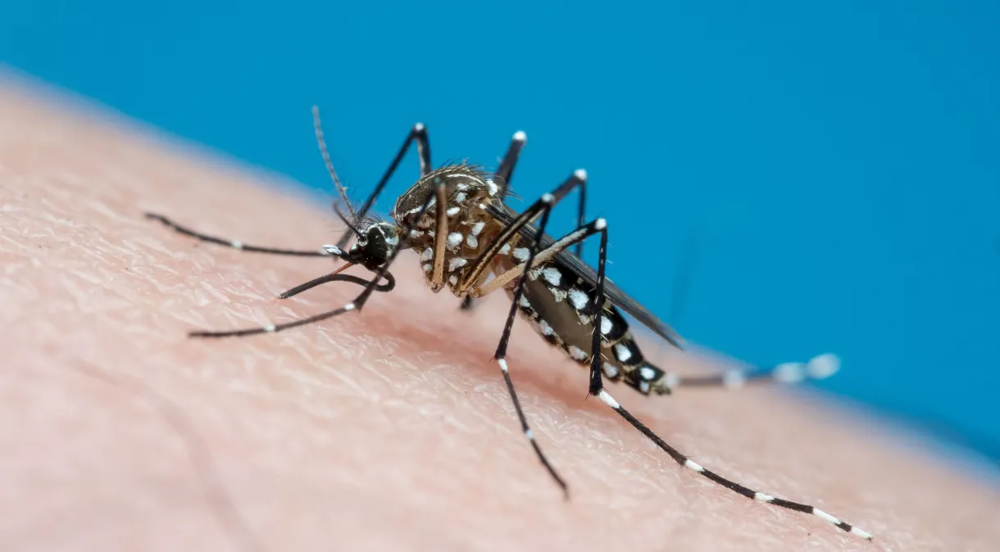
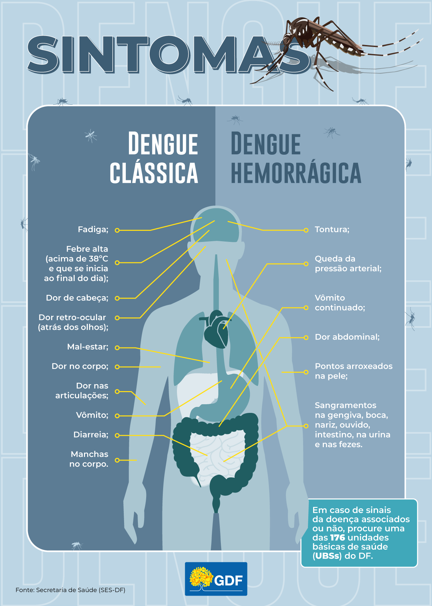

O que é a Dengue?
Dengue é uma doença viral transmitida principalmente pela picada do mosquito Aedes aegypti, embora
também
possa ser transmitida pelo Aedes albopictus. É comum em regiões tropicais e subtropicais do mundo,
incluindo
muitas áreas do Brasil e de outros países da América Latina, Ásia e África.
Os sintomas da dengue geralmente aparecem de 4 a 10 dias após a picada do mosquito e podem incluir febre
alta, dores
de cabeça intensas, dores musculares e articulares, náuseas, vômitos e erupções cutâneas. Em casos mais
graves, pode
ocorrer dengue grave, que pode levar a complicações sérias e até mesmo à morte, especialmente em
crianças
pequenas.
A prevenção da dengue envolve principalmente a eliminação dos criadouros do mosquito Aedes aegypti, como
água parada em
recipientes como pneus, vasos de plantas e recipientes descartáveis. Além disso, o uso de repelentes e
roupas que cubram a
maior parte do corpo também ajuda a prevenir as picadas do mosquito.

Fonte
da Imagem
Sintomas
- Febre alta: Geralmente acima de 38,5°C.
- Dores musculares intensas: Especialmente nas costas e articulações.
- Dor ao movimentar os olhos: Também conhecida como dor retro-orbital.
- Mal-estar geral: Sensação de cansaço e fraqueza.
- Falta de apetite: Perda de interesse em comer.
- Dor de cabeça: Pode ser intensa.
- Manchas vermelhas no corpo: Essas manchas também são chamadas de rash de pele.

Fonte
da imagem
Proliferação
A proliferação da dengue está diretamente ligada ao ciclo de vida do mosquito Aedes aegypti, o principal
vetor
da doença. Entender esse processo é essencial para implementar medidas de controle e prevenção. Aqui
estão
os principais pontos relacionados à proliferação da dengue:
- Ciclo de Vida do Aedes aegypti
O mosquito Aedes aegypti passa por quatro estágios de desenvolvimento: ovo, larva, pupa e
adulto.
Este ciclo de vida pode ser completado em aproximadamente 7 a 10 dias, dependendo das condições
ambientais, especialmente a temperatura e a disponibilidade de água parada.
-
Ovos: São depositados em locais com água parada, como recipientes domésticos, pneus,
vasos
de plantas, caixas d'água destampadas, entre outros. Os ovos podem sobreviver por vários
meses em condições secas e eclodem quando entram em contato com água.
-
Larvas: Após a eclosão dos ovos, as larvas se desenvolvem na água, passando por quatro
estágios larvais antes de se transformarem em pupas.
-
Pupas: As pupas não se alimentam e este estágio dura de dois a três dias antes de se
transformarem em mosquitos adultos.
-
Adultos: Os mosquitos adultos emergem das pupas e, após um período de maturação, as
fêmeas
estão prontas para picar e se alimentar de sangue humano, necessário para a produção de
ovos.
-
Condições Ambientais Favoráveis
- Clima Quente e Úmido: O Aedes aegypti prospera em climas quentes e úmidos, típicos de
muitas
regiões tropicais e subtropicais. As temperaturas elevadas aceleram o ciclo de vida do
mosquito, aumentando a população de vetores.
- Água Parada: Qualquer acúmulo de água, mesmo em pequenas quantidades, pode servir como
criadouro para o mosquito. Isso inclui água acumulada em recipientes, plantas, garrafas,
latas, piscinas não tratadas, entre outros.
- Fatores Humanos
- Urbanização e Crescimento Populacional: Áreas urbanas densamente povoadas com
infraestrutura
inadequada e falta de saneamento básico oferecem muitos locais para a proliferação de
mosquitos.
-
Mobilidade Humana: A movimentação de pessoas entre áreas endêmicas pode ajudar na
disseminação do vírus, especialmente em viagens internacionais e urbanização
descontrolada.
-
Armazenamento de Água: Em regiões onde o abastecimento de água é irregular, as pessoas
muitas vezes armazenam água em recipientes, criando condições ideais para a reprodução
do
mosquito.
-
Controle da Proliferação
-
Eliminação de Criadouros: A medida mais eficaz para controlar a proliferação do mosquito
é
eliminar locais de água parada. Isso inclui cobrir, esvaziar ou tratar recipientes onde
a
água pode acumular.
-
Uso de Inseticidas: Aplicação de inseticidas pode ajudar a reduzir a população de
mosquitos,
mas deve ser usada com cuidado para evitar o desenvolvimento de resistência.
-
Educação e Conscientização: Campanhas de conscientização são fundamentais para educar a
população sobre como prevenir a proliferação do mosquito e a importância de eliminar
criadouros.
-
Vigilância e Monitoramento: Monitorar a presença de mosquitos e a ocorrência de casos de
dengue ajuda a direcionar esforços de controle de forma mais eficaz.
Diagnóstico
O diagnóstico da dengue é feito por meio de exames clínicos e laboratoriais. O médico avalia os
sintomas apresentados e realiza exames como o hemograma, teste rápido, isolamento do vírus e exames
bioquímicos. Os sintomas típicos
incluem febre, dor de cabeça intensa, dor no fundo dos olhos, dificuldade para movimentar as
articulações,
dor muscular em todo o corpo,
tonturas, náuseas, vômitos e pintinhas vermelhas na pele. Caso haja suspeita de dengue, é importante
buscar
ajuda médica para confirmar o
diagnóstico e iniciar o tratamento rapidamente. Lembre-se de não ignorar os sinais do seu corpo e
contar
com especialistas para entender
a causa dos sintomas.
Prevenção
Para prevenir a dengue, é importante adotar algumas medidas simples que ajudam a evitar a doença.
Aqui estão algumas dicas importantes:
- Eliminação de Criadouros:
- Remover recipientes que acumulem água parada, como pneus velhos, garrafas, latas e vasos
de
plantas.
- Manter caixas d'água sempre fechadas e limpas.
- Limpar regularmente calhas e ralos para evitar acúmulo de água.
-
Uso de Repelentes:
- Aplicar repelente regularmente na pele exposta, especialmente durante o amanhecer e o
entardecer, períodos de maior atividade do mosquito Aedes aegypti.
-
Uso de Telas e Mosquiteiros:
- Instalar telas em janelas e portas para impedir a entrada de mosquitos em ambientes
fechados.
- Utilizar mosquiteiros em camas, especialmente para proteger crianças e pessoas que
descansam
durante o dia.
-
Medidas de Proteção Pessoal:
- Utilizar roupas que cubram a maior parte do corpo, como calças e camisas de manga
comprida,
especialmente em áreas de alta incidência de dengue.
- Utilizar dispositivos elétricos (como vaporizadores e inseticidas) para repelir
mosquitos.
-
Mobilização Comunitária:
- Engajar a comunidade local em ações de limpeza e conscientização sobre a importância da
eliminação de criadouros.
- Participar de campanhas de saúde pública promovidas pelo governo ou por organizações não
governamentais.
-
Controle Vetorial:
- Apoiar as ações de controle vetorial realizadas pelas autoridades locais, como a
aplicação
de
inseticidas em áreas com focos do mosquito Aedes aegypti.
- Monitorar e reportar casos suspeitos de dengue às autoridades de saúde para intervenção
rápida.
-
Educação e Informação:
- Educar a população sobre os sintomas da dengue e a importância de buscar atendimento
médico
imediato em caso de suspeita.
- Promover o autocuidado e a responsabilidade individual na prevenção da proliferação do
mosquito
transmissor.
Tratamento
O tratamento da dengue é principalmente sintomático e de suporte, pois não existe um tratamento
antiviral
específico para a doença. A dengue é causada pelo vírus da dengue, transmitido pelo mosquito Aedes
aegypti.
O manejo da doença depende da gravidade dos sintomas e do estágio da infecção. Aqui estão os principais
pontos sobre o tratamento da dengue:
- Hidratação
-
A hidratação é fundamental no tratamento da dengue, pois a febre alta e a perda de
líquidos
pelo vômito e pela diarreia podem levar à desidratação. Recomenda-se o consumo de
líquidos
como água, sucos naturais, chás e soluções de reidratação oral. Em casos graves, pode
ser
necessária a administração de fluidos intravenosos.
-
Medicações
- Antitérmicos: Paracetamol é o mais indicado para controlar a febre e aliviar dores de
cabeça
e no corpo. O uso de anti-inflamatórios não esteroides (AINEs), como ibuprofeno e
aspirina,
é desaconselhado devido ao risco aumentado de sangramento.
- Analgésicos: Para aliviar a dor, o paracetamol também é utilizado. Evita-se a aspirina e
outros AINEs pelos mesmos motivos citados acima.
- Repouso
- O repouso é importante para ajudar o corpo a se recuperar da infecção. Pacientes devem
evitar atividades físicas intensas enquanto estiverem doentes.
- Monitoramento
-
O monitoramento é essencial, especialmente nos primeiros dias da doença. Pacientes devem
ser
observados quanto a sinais de agravamento, como sangramentos, dor abdominal intensa,
vômitos
persistentes, sonolência ou irritabilidade, que podem indicar uma evolução para dengue
grave. Em casos graves, a hospitalização é necessária para um acompanhamento mais
rigoroso.
-
Evitar Complicações
-
Hemorragias: É importante monitorar sinais de sangramento, que podem ocorrer em casos
graves.
- Plaquetas e Hematócrito: A contagem de plaquetas e o hematócrito são monitorados para
identificar casos de dengue grave, que podem necessitar de tratamento mais intensivo.
-
Vacinação e Prevenção
- Vacinação: Existe uma vacina aprovada para a dengue (Dengvaxia), mas seu uso é restrito
a
indivíduos previamente infectados com dengue, devido ao risco de exacerbação da doença
em
soronegativos.
- Prevenção: A melhor forma de prevenção é evitar a picada do mosquito Aedes aegypti,
utilizando repelentes, mosquiteiros e eliminando criadouros de mosquitos.
Considerações Finais
De acordo com as fontes da Prefeitura de Toledo - PR, temos o mapa mostrando os focos de dengue
em
cada bairro, segue o
link